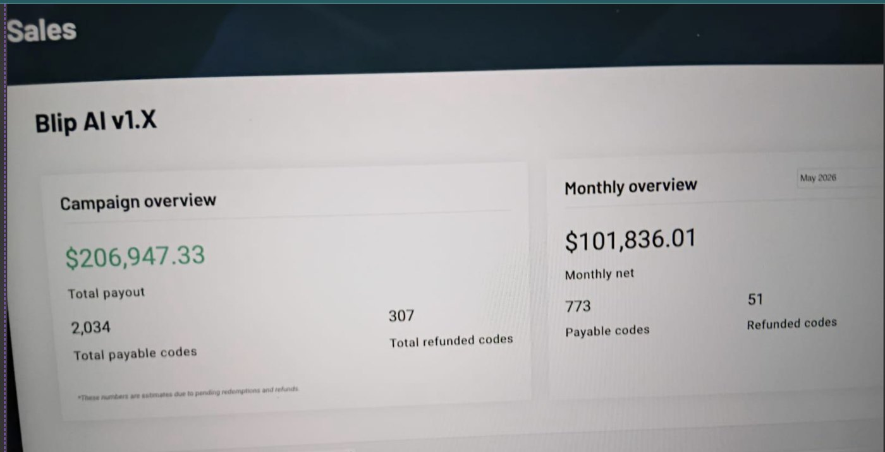
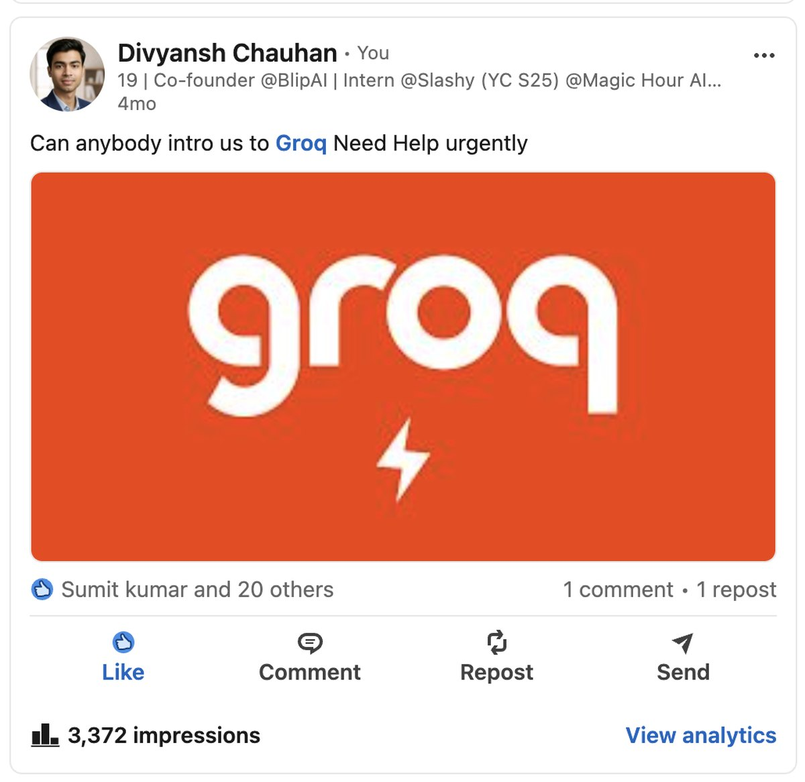

← index
Blip reached $207k, then got attacked
blip reached $206,947 in gross sales. then it was attacked for three days, our groq account was banned, and refunds took about a third of the revenue. it's the most useful thing that happened to me, so it's here.
What blip was
a voice-to-text tool and a cheaper alternative to wispr flow. i founded it and ran it alone: product, pricing, onboarding, funnel tracking and all distribution. it sold through a lifetime-deal campaign, which is why the dashboard counts codes instead of subscriptions. we got to 10,000+ users from about 2m organic views on reddit, x and instagram, with no ad spend and no existing audience.

What happened
someone started sending the product huge numbers of requests. it wasn't a clever exploit, just volume. every request went to our inference provider on our api key, so our usage and bill jumped far past normal.
two things went wrong:
- our groq account was banned. the traffic looked like abuse because it was abuse, and the ban fell on our account, not on whoever sent it. without inference blip can't transcribe anything, so the app stopped working.
- the product was down for three days. customers who had just bought a lifetime deal found a broken app and asked for refunds. 307 of them did.
the attack cost the attacker nothing and cost us about a third of the revenue. the outage ended, but the refunds didn't come back.
What i did about it
i handled it badly at first. i spent about a day trying to fix it alone: reading docs, filing support tickets and checking the dashboard. on day two i did what i should have done in the first hour and posted publicly that i was stuck and what i needed.

nobody introduced me to groq and the ban was never lifted. instead harsh, slashy's co-founder, saw the post and gave me access to his own groq account, and blip came back up on his key.
the help didn't come from the 3,372 people who saw the post. it came from the co-founder of the company where i'm the first hire, someone i already worked with every day, and he only saw it because i posted it. i'd been thinking about reach, and what mattered was a relationship i already had.
What i learned
- i treated an api key like a config value when it was a single point of failure. i had no rate limiting, per-user quotas, spend alerts or backup provider. each takes a few hours to set up, and any one of them would have made this a minor problem instead of an outage.
- a provider's abuse detection can't tell your traffic from an attacker's. it protects the provider, acts without asking, and bans the account it can see, which is yours. if you rely on one provider, one bad day can shut you down faster than any appeal or refund window.
- lifetime deals turn downtime into permanent losses. a subscriber who has a bad week might cancel next month and come back later. a lifetime-deal buyer inside the refund window just refunds. i priced for cash up front without accounting for that risk.
- waiting a day cost more than asking for help would have. i could have posted on day one and didn't, because asking for help felt worse than losing money. it wasn't.
i still think blip was a good product. it made real money from people who had never heard of me, competing with a well-funded incumbent. but i built it as if nobody would ever attack it, and the first attack took a third of the revenue in seventy-two hours.
portfolios usually show only the numbers that went well. this one didn't, and i learned more from it than from anything else.